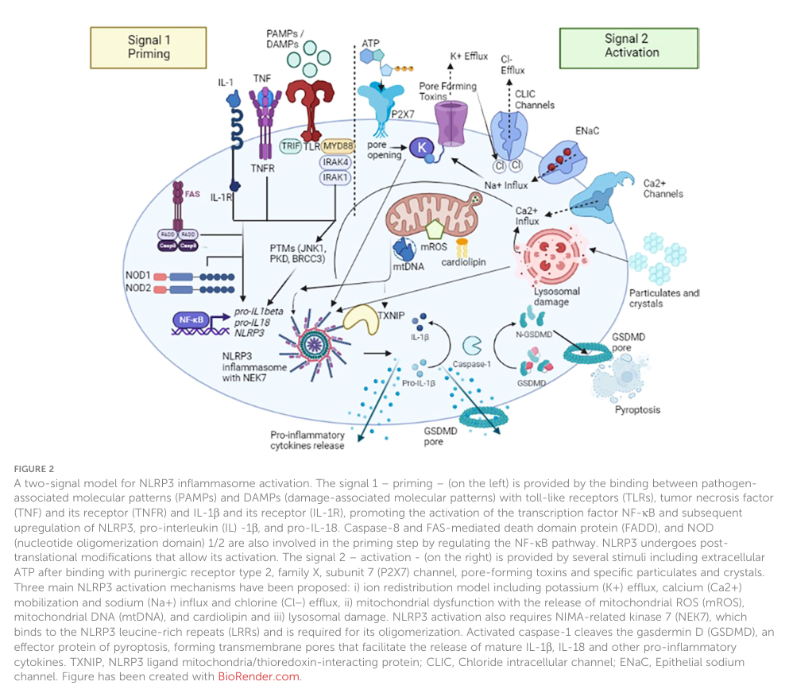

Familial cold autoinflammatory syndrome (FCAS) is a dominantly inherited autoinflammatory disorder characterized by recurrent, cold-triggered episodes of urticaria-like skin rash, low-grade fever, arthralgia/myalgia, and conjunctivitis. FCAS1 (NLRP3/cryopyrin) is the mildest disorder on the cryopyrin-associated periodic syndrome (CAPS) spectrum, which also includes Muckle-Wells syndrome and CINCA/NOMID. The shared mechanism is inappropriate activation of the NLRP3 inflammasome with caspase-1-dependent overproduction of IL-1beta. Genetically distinct FCAS-like cold-triggered syndromes are caused by mutations in NLRP12 (FCAS2), PLCG2 (FCAS3), and NLRP1 (FCAS4).
Ask a research question about Familial Cold Autoinflammatory Syndrome. OpenScientist will conduct autonomous deep research using the Disorder Mechanisms Knowledge Base and PubMed literature (typically 10-30 minutes).
Do not include personal health information in your question. Questions and results are cached in your browser's local storage.
name: Familial Cold Autoinflammatory Syndrome
creation_date: '2026-06-16T00:00:00Z'
category: Mendelian
synonyms:
- FCAS
- Familial cold urticaria
- FCU
- Familial cold-induced autoinflammatory syndrome
- Familial polymorphous cold eruption
disease_term:
preferred_term: familial cold autoinflammatory syndrome
term:
id: MONDO:0018768
label: familial cold autoinflammatory syndrome
parents:
- Autoinflammatory diseases
- Cryopyrin-associated periodic syndromes
classifications:
harrisons_chapter:
- classification_value: IMMUNE_RHEUMATOLOGIC
evidence:
- reference: PMID:34198614
supports: SUPPORT
evidence_source: HUMAN_CLINICAL
snippet: "Systemic autoinflammatory diseases are a heterogeneous family of disorders
characterized by a dysregulation of the innate immune system, in which sterile
inflammation primarily develops through antigen-independent hyperactivation of immune
pathways."
explanation: FCAS is a monogenic systemic autoinflammatory disease driven by
innate immune dysregulation, placing it in Harrison's immune-mediated and
inflammatory disorders chapter.
description: >
Familial cold autoinflammatory syndrome (FCAS) is a dominantly inherited
autoinflammatory disorder characterized by recurrent, cold-triggered episodes
of urticaria-like skin rash, low-grade fever, arthralgia/myalgia, and
conjunctivitis. FCAS1 (NLRP3/cryopyrin) is the mildest disorder on the
cryopyrin-associated periodic syndrome (CAPS) spectrum, which also includes
Muckle-Wells syndrome and CINCA/NOMID. The shared mechanism is inappropriate
activation of the NLRP3 inflammasome with caspase-1-dependent overproduction of
IL-1beta. Genetically distinct FCAS-like cold-triggered syndromes are caused by
mutations in NLRP12 (FCAS2), PLCG2 (FCAS3), and NLRP1 (FCAS4).
references:
- reference: PMID:11687797
title: "Mutation of a new gene encoding a putative pyrin-like protein causes familial cold autoinflammatory syndrome and Muckle-Wells syndrome."
- reference: PMID:38146057
title: "The discovery of NLRP3 and its function in cryopyrin-associated periodic syndromes and innate immunity."
has_subtypes:
- name: FCAS1
display_name: FCAS1 (NLRP3 / cryopyrin)
description: >
The classic and most common form of FCAS, caused by heterozygous
gain-of-function mutations in NLRP3 (CIAS1, encoding cryopyrin). FCAS1 is the
mildest phenotype on the cryopyrin-associated periodic syndrome (CAPS)
spectrum. Inheritance is autosomal dominant.
evidence:
- reference: PMID:11687797
supports: SUPPORT
evidence_source: HUMAN_CLINICAL
snippet: "This resulted in the identification of four distinct mutations in a gene
that segregated with the disorder in three families with FCAS and one family with
MWS."
explanation: Original identification of CIAS1/NLRP3 mutations as the cause of
FCAS, establishing the genetic basis of the classic FCAS1 subtype.
- name: FCAS2
display_name: FCAS2 (NLRP12)
description: >
A cold-induced hereditary periodic fever syndrome caused by heterozygous
NLRP12 (NALP12/Monarch-1) mutations, clinically resembling FCAS1 but
genetically distinct. NLRP12 mutations impair NF-kappaB regulation.
evidence:
- reference: PMID:18230725
supports: SUPPORT
evidence_source: HUMAN_CLINICAL
snippet: "we identified nonambiguous mutations in NALP12 (i.e., nonsense and splice
site) in two families with periodic fever syndromes."
explanation: Original identification of NALP12 (NLRP12) mutations causing
hereditary periodic fever syndromes (FCAS2).
- name: FCAS3
display_name: FCAS3 (PLCG2)
description: >
A dominantly inherited syndrome caused by heterozygous PLCG2 deletions/mutations
(PLCG2-associated antibody deficiency and immune dysregulation, PLAID), in
which cold exposure triggers urticaria and leukocyte activation. PLCG2
deletions confer gain of phospholipase function at subphysiologic temperature.
evidence:
- reference: PMID:22236196
supports: SUPPORT
evidence_source: HUMAN_CLINICAL
snippet: "Cold urticaria occurred in all affected subjects."
explanation: NEJM description of cold-induced urticaria in families with
PLCG2 deletions, the basis of the FCAS3/PLAID subtype.
- name: FCAS4
display_name: FCAS4 (NLRP1)
description: >
A rare autoinflammatory and autoimmune syndrome associated with NLRP1
mutations (NAIAD, NLRP1-associated autoinflammation with arthritis and
dyskeratosis). NLRP1 mutations activate the NLRP1 inflammasome with elevated
caspase-1 and IL-18.
evidence:
- reference: PMID:27965258
supports: SUPPORT
evidence_source: HUMAN_CLINICAL
snippet: "We demonstrate the responsibility of human NLRP1 in a novel autoinflammatory
disorder that we propose to call NAIAD for NLRP1-associated autoinflammation with
arthritis and dyskeratosis."
explanation: Original identification of NLRP1 mutations causing an
autoinflammatory disorder, the basis of the FCAS4/NAIAD subtype.
pathophysiology:
- name: NLRP3 gain-of-function mutation
description: >
Heterozygous gain-of-function mutations in NLRP3 (CIAS1, encoding cryopyrin)
lower the activation threshold of the NLRP3 inflammasome. NLRP3 is an
intracellular NOD-like receptor sensor with a pyrin domain, a NACHT
nucleotide-binding domain, and a leucine-rich repeat region. In FCAS1,
generalized cold exposure triggers inappropriate inflammasome activation in
myeloid cells.
subtypes:
- FCAS1
gene:
preferred_term: NLRP3
term:
id: hgnc:16400
label: NLRP3
cell_types:
- preferred_term: Monocyte
term:
id: CL:0000576
label: monocyte
- preferred_term: Macrophage
term:
id: CL:0000235
label: macrophage
downstream:
- target: Constitutive NLRP3 inflammasome activation
evidence:
- reference: PMID:11687797
supports: SUPPORT
evidence_source: HUMAN_CLINICAL
snippet: "This gene, called CIAS1, is expressed in peripheral blood leukocytes and
encodes a protein with a pyrin domain, a nucleotide-binding site (NBS, NACHT subfamily)
domain and a leucine-rich repeat (LRR) motif region, suggesting a role in the
regulation of inflammation and apoptosis."
explanation: Identification of NLRP3/CIAS1 domain architecture supporting its
role as an inflammation regulator whose mutation causes FCAS.
- reference: PMID:36275641
supports: SUPPORT
evidence_source: HUMAN_CLINICAL
snippet: "Gain-of-function mutations in NLRP3 gene are causative of signs and inflammatory
symptoms in CAPS patients"
explanation: Review confirming NLRP3 gain-of-function mutations as the cause
of CAPS, including the FCAS phenotype.
- name: Constitutive NLRP3 inflammasome activation
description: >
Mutant NLRP3 assembles the inflammasome complex with reduced/absent
requirement for a second activating signal, especially following the
environmental cold trigger characteristic of FCAS. Assembly recruits the
adaptor ASC and pro-caspase-1.
subtypes:
- FCAS1
cell_types:
- preferred_term: Monocyte
term:
id: CL:0000576
label: monocyte
biological_processes:
- preferred_term: NLRP3 inflammasome complex assembly
term:
id: GO:0044546
label: NLRP3 inflammasome complex assembly
modifier: INCREASED
downstream:
- target: Caspase-1 activation and IL-1beta overproduction
evidence:
- reference: PMID:38146057
supports: SUPPORT
evidence_source: HUMAN_CLINICAL
snippet: "NLRP3 serves as an intracellular sensor that drives carefully coordinated
assembly of the inflammasome, and downstream inflammation mediated by IL-1 and
IL-18."
explanation: Establishes inflammasome assembly as the central event linking
NLRP3 to downstream IL-1/IL-18-mediated inflammation.
- name: Caspase-1 activation and IL-1beta overproduction
description: >
The assembled NLRP3 inflammasome activates caspase-1, which cleaves
pro-IL-1beta and pro-IL-18 into their mature, secreted forms and triggers
gasdermin-D-dependent pyroptosis. Excess IL-1beta is the principal driver of
the systemic inflammatory phenotype.
subtypes:
- FCAS1
biological_processes:
- preferred_term: Interleukin-1 beta production
term:
id: GO:0032611
label: interleukin-1 beta production
modifier: INCREASED
- preferred_term: Pyroptotic inflammatory response
term:
id: GO:0070269
label: pyroptotic inflammatory response
modifier: INCREASED
downstream:
- target: Systemic cold-triggered sterile inflammation
evidence:
- reference: PMID:36275641
supports: SUPPORT
evidence_source: IN_VITRO
snippet: "an abnormal activation of the NLRP3 inflammasome, resulting in an inappropriate
release of IL-1β and gasdermin-D-dependent pyroptosis, has been demonstrated
both in in vitro and in ex vivo studies."
explanation: In vitro/ex vivo evidence that mutant NLRP3 inflammasome
activation drives inappropriate IL-1beta release and pyroptosis.
- reference: PMID:39334417
supports: SUPPORT
evidence_source: HUMAN_CLINICAL
snippet: "Cryopyrin-associated periodic syndrome (CAPS) is characterized by excessive
IL-1β release resulting in systemic and organ inflammation."
explanation: Confirms excessive IL-1beta release as the proximate cause of
systemic and organ inflammation in CAPS.
- name: Systemic cold-triggered sterile inflammation
description: >
The shared downstream phenotype on which all FCAS etiologies converge:
episodic, cold-triggered systemic sterile inflammation. In NLRP3-driven
FCAS1 this is principally IL-1-driven, whereas the NLRP12 (NF-kappaB
dysregulation) and PLCG2 (cold-dependent leukocyte/mast-cell activation)
etiologies act through parallel inflammatory pathways that are not strictly
IL-1-dependent. Clinically it manifests as cold-triggered urticarial rash,
low-grade fever, arthralgia/myalgia, and conjunctivitis; across the broader
CAPS spectrum it can extend to sensorineural hearing loss, CNS inflammation,
and AA amyloidosis.
subtypes:
- FCAS1
biological_processes:
- preferred_term: Inflammatory response
term:
id: GO:0006954
label: inflammatory response
modifier: INCREASED
evidence:
- reference: PMID:11687797
supports: SUPPORT
evidence_source: HUMAN_CLINICAL
snippet: "Familial cold autoinflammatory syndrome (FCAS, MIM 120100), commonly known
as familial cold urticaria (FCU), is an autosomal-dominant systemic inflammatory
disease characterized by intermittent episodes of rash, arthralgia, fever and conjunctivitis
after generalized exposure to cold."
explanation: Defines the cold-triggered systemic inflammatory phenotype that
results from dysregulated IL-1-driven inflammation in FCAS.
- name: NLRP12-associated NF-kappaB dysregulation
description: >
In FCAS2, nonsense and splice-site mutations in NLRP12 (NALP12) have a
deleterious effect on NF-kappaB signaling, producing a cold-associated
hereditary periodic fever phenotype distinct from NLRP3-driven disease.
subtypes:
- FCAS2
gene:
preferred_term: NLRP12
term:
id: hgnc:22938
label: NLRP12
evidence:
- reference: PMID:18230725
supports: SUPPORT
evidence_source: IN_VITRO
snippet: "As shown by means of functional studies, these two NALP12 mutations have
a deleterious effect on NF-kappaB signaling."
explanation: Functional evidence that FCAS2-causing NLRP12 mutations
dysregulate NF-kappaB signaling.
downstream:
- target: Systemic cold-triggered sterile inflammation
causal_link_type: INDIRECT_KNOWN_INTERMEDIATES
description: NLRP12-driven NF-kappaB dysregulation converges on the same
cold-associated systemic autoinflammatory phenotype that characterizes the
CAPS/FCAS spectrum, via NF-kappaB-regulated cytokines rather than strictly
IL-1 alone.
- name: PLCG2 cold-dependent gain of function
description: >
In FCAS3 (PLAID), in-frame genomic deletions in the PLCG2 autoinhibitory
domain produce constitutively active phospholipase C-gamma-2. Affected cells
show diminished signaling at 37C but enhanced signaling at subphysiologic
temperatures, explaining cold-induced leukocyte activation and urticaria.
subtypes:
- FCAS3
gene:
preferred_term: PLCG2
term:
id: hgnc:9066
label: PLCG2
evidence:
- reference: PMID:22236196
supports: SUPPORT
evidence_source: IN_VITRO
snippet: "PLCG2-expressing cells had diminished cellular signaling at 37\xB0C but
enhanced signaling at subphysiologic temperatures."
explanation: Demonstrates the temperature-dependent gain of PLCG2 function
underlying cold-triggered inflammation in FCAS3.
downstream:
- target: Systemic cold-triggered sterile inflammation
causal_link_type: INDIRECT_KNOWN_INTERMEDIATES
description: Cold-dependent PLCG2 gain of function drives mast-cell and
leukocyte activation that feeds into the shared cold-triggered systemic
inflammatory phenotype of the FCAS spectrum through a PLCgamma2-dependent
pathway rather than IL-1beta overproduction.
- name: NLRP1 inflammasome activation
description: >
In FCAS4 (NAIAD), NLRP1 mutations activate the NLRP1 inflammasome, with
elevated systemic caspase-1 and IL-18, producing autoinflammation with
arthritis and skin dyskeratosis.
subtypes:
- FCAS4
gene:
preferred_term: NLRP1
term:
id: hgnc:14374
label: NLRP1
biological_processes:
- preferred_term: Interleukin-18 production
term:
id: GO:0032621
label: interleukin-18 production
modifier: INCREASED
evidence:
- reference: PMID:27965258
supports: SUPPORT
evidence_source: HUMAN_CLINICAL
snippet: "The three patients showed elevated systemic levels of caspase-1 and interleukin
18, which suggested involvement of NLRP1 inflammasome."
explanation: Evidence that NLRP1 mutations in FCAS4/NAIAD drive caspase-1 and
IL-18 elevation via the NLRP1 inflammasome.
downstream:
- target: Caspase-1 activation and IL-1beta overproduction
causal_link_type: DIRECT
description: Activation of the NLRP1 inflammasome raises systemic caspase-1 and
IL-18, converging on the caspase-1/IL-1 axis that drives FCAS-spectrum
autoinflammation.
phenotypes:
- name: Urticarial rash
description: >
Cold-triggered urticaria-like (often neutrophilic) skin rash is the
cardinal cutaneous manifestation of FCAS.
phenotype_term:
preferred_term: Urticaria
term:
id: HP:0001025
label: Urticaria
temporality: RECURRENT
evidence:
- reference: PMID:11687797
supports: SUPPORT
evidence_source: HUMAN_CLINICAL
snippet: "intermittent episodes of rash, arthralgia, fever and conjunctivitis after
generalized exposure to cold."
explanation: FCAS is defined by intermittent cold-triggered rash among its
core features.
- name: Recurrent fever
description: Low-grade fever during cold-triggered inflammatory attacks.
phenotype_term:
preferred_term: Recurrent fever
term:
id: HP:0001954
label: Recurrent fever
evidence:
- reference: PMID:11687797
supports: SUPPORT
evidence_source: HUMAN_CLINICAL
snippet: "intermittent episodes of rash, arthralgia, fever and conjunctivitis after
generalized exposure to cold."
explanation: Fever is a defining intermittent feature of FCAS attacks.
- name: Arthralgia
description: Joint pain and transient joint stiffness during attacks.
phenotype_term:
preferred_term: Arthralgia
term:
id: HP:0002829
label: Arthralgia
evidence:
- reference: PMID:11687797
supports: SUPPORT
evidence_source: HUMAN_CLINICAL
snippet: "intermittent episodes of rash, arthralgia, fever and conjunctivitis after
generalized exposure to cold."
explanation: Arthralgia is a defining core feature of FCAS attacks.
- name: Conjunctivitis
description: >
Ocular inflammation (conjunctivitis / red eye) is a common feature of FCAS
and the broader CAPS spectrum.
phenotype_term:
preferred_term: Conjunctivitis
term:
id: HP:0000509
label: Conjunctivitis
evidence:
- reference: PMID:11687797
supports: SUPPORT
evidence_source: HUMAN_CLINICAL
snippet: "intermittent episodes of rash, arthralgia, fever and conjunctivitis after
generalized exposure to cold."
explanation: Conjunctivitis is a defining core feature of FCAS attacks.
- reference: PMID:32983099
supports: SUPPORT
evidence_source: HUMAN_CLINICAL
snippet: "neutrophilic urticaria, fever, conjunctivitis, and arthralgia"
explanation: Inflammasome review confirming conjunctivitis as part of the CAPS
clinical presentation alongside neutrophilic urticaria, fever, and arthralgia.
- name: Myalgia
description: Muscle pain during cold-triggered inflammatory episodes.
phenotype_term:
preferred_term: Myalgia
term:
id: HP:0003326
label: Myalgia
evidence:
- reference: PMID:34198614
supports: PARTIAL
evidence_source: HUMAN_CLINICAL
snippet: "Systemic autoinflammatory diseases are a heterogeneous family of disorders
characterized by a dysregulation of the innate immune system, in which sterile
inflammation primarily develops through antigen-independent hyperactivation of immune
pathways."
explanation: Review of monogenic autoinflammatory diseases (including CAPS)
characterizing the sterile inflammatory basis; myalgia is part of the
musculoskeletal inflammatory phenotype.
- name: Elevated C-reactive protein
category: Laboratory
description: >
Elevated acute-phase reactants (CRP and serum amyloid A) accompany attacks
and are used for diagnosis and treat-to-target monitoring.
phenotype_term:
preferred_term: Elevated circulating C-reactive protein concentration
term:
id: HP:0011227
label: Elevated circulating C-reactive protein concentration
evidence:
- reference: PMID:39334417
supports: SUPPORT
evidence_source: HUMAN_CLINICAL
snippet: "Treatment response was evaluated by CAPS disease activity score, C-reactive
protein (CRP), and/or serum amyloid A (SAA) levels."
explanation: CRP and SAA are the acute-phase reactants used to assess CAPS
inflammatory activity and treatment response.
- name: Sensorineural hearing loss
description: >
Progressive sensorineural hearing loss is a complication of more severe CAPS
phenotypes (Muckle-Wells syndrome and NOMID/CINCA); it is uncommon in mild
FCAS but defines the disease spectrum.
phenotype_term:
preferred_term: Sensorineural hearing impairment
term:
id: HP:0000407
label: Sensorineural hearing impairment
clinical_course: PROGRESSIVE
evidence:
- reference: PMID:11687797
supports: SUPPORT
evidence_source: HUMAN_CLINICAL
snippet: "Muckle-Wells syndrome (MWS; MIM 191900), which also maps to chromosome 1q44,
is an autosomal-dominant periodic fever syndrome with a similar phenotype except
that symptoms are not precipitated by cold exposure and that sensorineural hearing
loss is frequently also present."
explanation: Establishes sensorineural hearing loss as a feature of the more
severe CAPS phenotypes contiguous with FCAS.
- name: Renal amyloidosis
description: >
Long-standing uncontrolled inflammation can lead to AA (secondary)
amyloidosis with renal involvement, the most serious long-term complication
across the CAPS spectrum.
phenotype_term:
preferred_term: Renal amyloidosis
term:
id: HP:0001917
label: Renal amyloidosis
evidence:
- reference: PMID:34198614
supports: PARTIAL
evidence_source: HUMAN_CLINICAL
snippet: "Systemic autoinflammatory diseases are a heterogeneous family of disorders
characterized by a dysregulation of the innate immune system, in which sterile
inflammation primarily develops through antigen-independent hyperactivation of immune
pathways."
explanation: Review of monogenic autoinflammatory diseases; AA amyloidosis is
a recognized complication of sustained sterile inflammation in CAPS. Direct
amyloidosis quantification is in the full text; the abstract supports the
inflammatory basis.
genetic:
- name: NLRP3
gene_term:
preferred_term: NLRP3
term:
id: hgnc:16400
label: NLRP3
association: Causative
presence: PRESENT
subtype: FCAS1
inheritance:
- name: Autosomal dominant
notes: >
Heterozygous gain-of-function missense mutations in NLRP3 (CIAS1) cause
FCAS1, the classic and most common form. NLRP3 encodes cryopyrin.
evidence:
- reference: PMID:11687797
supports: SUPPORT
evidence_source: HUMAN_CLINICAL
snippet: "This resulted in the identification of four distinct mutations in a gene
that segregated with the disorder in three families with FCAS and one family with
MWS."
explanation: Original identification of NLRP3/CIAS1 as the causative gene for
FCAS.
- name: NLRP12
gene_term:
preferred_term: NLRP12
term:
id: hgnc:22938
label: NLRP12
association: Causative
presence: PRESENT
subtype: FCAS2
inheritance:
- name: Autosomal dominant
notes: >
Heterozygous NLRP12 (NALP12) nonsense and splice-site mutations cause FCAS2,
impairing NF-kappaB regulation.
evidence:
- reference: PMID:18230725
supports: SUPPORT
evidence_source: HUMAN_CLINICAL
snippet: "Overall, these data identify a group of HPFs defined by molecular defects
in NALP12, opening up new ways to manage these disorders."
explanation: Identification of NLRP12 as the gene defining the FCAS2
periodic fever group.
- name: PLCG2
gene_term:
preferred_term: PLCG2
term:
id: hgnc:9066
label: PLCG2
association: Causative
presence: PRESENT
subtype: FCAS3
inheritance:
- name: Autosomal dominant
notes: >
Heterozygous in-frame genomic deletions in PLCG2 cause FCAS3 (PLAID), with
gain of phospholipase C-gamma-2 function at subphysiologic temperature.
evidence:
- reference: PMID:22236196
supports: SUPPORT
evidence_source: HUMAN_CLINICAL
snippet: "Genomic deletions in PLCG2 cause gain of PLCγ(2) function, leading
to signaling abnormalities in multiple leukocyte subsets and a phenotype encompassing
both excessive and deficient immune function."
explanation: Establishes PLCG2 gain-of-function deletions as the cause of the
FCAS3/PLAID cold urticaria phenotype.
- name: NLRP1
gene_term:
preferred_term: NLRP1
term:
id: hgnc:14374
label: NLRP1
association: Causative
presence: PRESENT
subtype: FCAS4
inheritance:
- name: Autosomal dominant
- name: Autosomal recessive
notes: >
NLRP1 mutations cause FCAS4 (NAIAD), activating the NLRP1 inflammasome.
Reported families include both homozygous (recessive, consanguineous) and de
novo heterozygous mutations.
evidence:
- reference: PMID:27965258
supports: SUPPORT
evidence_source: HUMAN_CLINICAL
snippet: "Molecular screening revealed a non-synonymous homozygous mutation in NLRP1
(c.2176C>T; p.Arg726Trp) in two cousins born of related parents originating from
Algeria and a de novo heterozygous mutation (c.3641C>G, p.Pro1214Arg) in a girl
of Dutch origin."
explanation: Identification of causative NLRP1 mutations in FCAS4/NAIAD.
environmental:
- name: Generalized cold exposure
description: >
Generalized cold exposure is the characteristic (near-pathognomonic) trigger
of FCAS inflammatory attacks; in FCAS3, cold drives temperature-dependent
PLCG2 activation.
presence: PRESENT
effect: HARMFUL
evidence:
- reference: PMID:22236196
supports: SUPPORT
evidence_source: HUMAN_CLINICAL
snippet: "Cold urticaria occurred in all affected subjects."
explanation: Cold exposure is the defining environmental trigger of urticaria
in the cold autoinflammatory spectrum (PLCG2/FCAS3 cohort).
biochemical:
- name: C-reactive protein
notes: >
Acute-phase reactant elevated during inflammatory attacks; used with serum
amyloid A to assess CAPS disease activity and treatment response.
presence: PRESENT
evidence:
- reference: PMID:39334417
supports: SUPPORT
evidence_source: HUMAN_CLINICAL
snippet: "Treatment response was evaluated by CAPS disease activity score, C-reactive
protein (CRP), and/or serum amyloid A (SAA) levels."
explanation: CRP is a core biochemical marker of disease activity in CAPS.
- name: Serum amyloid A
notes: >
Acute-phase reactant; sustained elevation drives AA amyloidosis risk, making
SAA normalization a treat-to-target goal.
presence: PRESENT
evidence:
- reference: PMID:39334417
supports: SUPPORT
evidence_source: HUMAN_CLINICAL
snippet: "Treatment response was evaluated by CAPS disease activity score, C-reactive
protein (CRP), and/or serum amyloid A (SAA) levels."
explanation: SAA is a core biochemical marker of disease activity used to
guide CAPS therapy.
treatments:
- name: Anakinra
description: >
Recombinant IL-1 receptor antagonist (blocks IL-1alpha and IL-1beta), given
daily; effective across the CAPS spectrum including FCAS.
therapeutic_modality: OTHER
treatment_term:
preferred_term: Pharmacotherapy
term:
id: NCIT:C15986
label: Pharmacotherapy
therapeutic_agent:
- preferred_term: anakinra
term:
id: CHEBI:231683
label: Anakinra
evidence:
- reference: PMID:38146057
supports: SUPPORT
evidence_source: HUMAN_CLINICAL
snippet: "The subsequent development of targeted therapies successfully used in the
treatment of patients with CAPS completes the bench to bedside translational loop
which has defined the study of this unique protein."
explanation: Confirms IL-1-targeted therapies (including anakinra) are
successfully used to treat CAPS.
- name: Canakinumab
description: >
Anti-IL-1beta monoclonal antibody administered every 4-8 weeks; FDA/EMA
approved for CAPS phenotypes. Reduces flares and normalizes CRP/SAA.
therapeutic_modality: MONOCLONAL_ANTIBODY
treatment_term:
preferred_term: Pharmacotherapy
term:
id: NCIT:C15986
label: Pharmacotherapy
therapeutic_agent:
- preferred_term: canakinumab
term:
id: NCIT:C80971
label: Canakinumab
evidence:
- reference: PMID:39334417
supports: SUPPORT
evidence_source: HUMAN_CLINICAL
snippet: "After treatments, 60% (6/10) of CAPS patients achieved complete remission
without relapse and the rest showed minimal disease activity."
explanation: Real-world cohort (including an FCAS patient) showing canakinumab
induces remission in CAPS.
- name: Rilonacept
description: >
IL-1 trap (soluble decoy receptor) administered weekly; reduces flares in
FCAS/MWS with sustained response.
therapeutic_modality: OTHER
treatment_term:
preferred_term: Pharmacotherapy
term:
id: NCIT:C15986
label: Pharmacotherapy
therapeutic_agent:
- preferred_term: rilonacept
term:
id: NCIT:C84137
label: Rilonacept
evidence:
- reference: PMID:38146057
supports: SUPPORT
evidence_source: HUMAN_CLINICAL
snippet: "The subsequent development of targeted therapies successfully used in the
treatment of patients with CAPS completes the bench to bedside translational loop
which has defined the study of this unique protein."
explanation: Confirms targeted IL-1 therapies (including the IL-1 trap
rilonacept) are established CAPS treatments.
- name: Genetic counseling
description: >
Autosomal dominant inheritance warrants genetic counseling for affected
families across all FCAS subtypes.
treatment_term:
preferred_term: genetic counseling
term:
id: MAXO:0000079
label: genetic counseling
evidence:
- reference: PMID:38343435
supports: SUPPORT
evidence_source: HUMAN_CLINICAL
snippet: "Cryopyrin-associated periodic syndrome or NLRP3-associated autoinflammatory
disease (NLRP3-AID) and NLRP12-AID are both Mendelian disorders with autosomal dominant
inheritance."
explanation: Autosomal dominant Mendelian inheritance of FCAS subtypes
supports genetic counseling for families.
- name: Cold avoidance
description: >
Avoidance of generalized cold exposure reduces the frequency of
cold-triggered FCAS attacks as a non-pharmacological supportive measure.
treatment_term:
preferred_term: supportive care
term:
id: MAXO:0000950
label: supportive care
evidence:
- reference: PMID:11687797
supports: SUPPORT
evidence_source: HUMAN_CLINICAL
snippet: "intermittent episodes of rash, arthralgia, fever and conjunctivitis after
generalized exposure to cold."
explanation: Because attacks follow generalized cold exposure, avoiding cold
is a logical supportive intervention.
Question: You are an expert researcher providing comprehensive, well-cited information.
Provide detailed information focusing on: 1. Key concepts and definitions with current understanding 2. Recent developments and latest research (prioritize 2023-2024 sources) 3. Current applications and real-world implementations 4. Expert opinions and analysis from authoritative sources 5. Relevant statistics and data from recent studies
Format as a comprehensive research report with proper citations. Include URLs and publication dates where available. Always prioritize recent, authoritative sources and provide specific citations for all major claims.
Please provide a comprehensive research report on Familial Cold Autoinflammatory Syndrome covering all of the disease characteristics listed below. This report will be used to populate a disease knowledge base entry. Be thorough and cite primary literature (PMID preferred) for all claims.
For each section, suggested databases/resources are listed. These are the first places you should search for information on each topic.
Search first: OMIM, Orphanet, ICD-10/ICD-11, MeSH, PubMed
Search first: PubMed, Cochrane Library, UpToDate, clinical guidelines, ClinVar, ClinGen, GWAS Catalog, PheGenI, CTD, CDC, WHO, epidemiological databases
Search first: PubMed, Cochrane Library, clinical trial databases, GWAS Catalog, gnomAD, WHO, CDC, nutrition databases
Search first: CTD, PubMed, PheGenI, GxE databases
Search first: HPO (Human Phenotype Ontology), OMIM, Orphanet, PubMed, clinicaltrials.gov, MedDRA, SNOMED CT, DECIPHER, LOINC
For each phenotype, provide: - Phenotype type: symptoms, clinical signs, physical manifestations, behavioral changes, or laboratory abnormalities
For symptoms/signs: HPO, OMIM, Orphanet, PubMed For behavioral changes: HPO, DSM, RDoC (Research Domain Criteria), PubMed For laboratory abnormalities: LOINC, SNOMED CT, LabTests Online, PubMed - Phenotype characteristics: Search first: OMIM, Orphanet, HPO, PubMed - Age of symptom onset (neonatal, childhood, adult-onset, late-onset) - Symptom severity (mild, moderate, severe, variable) - Symptom progression (stable, progressive, episodic, fluctuating) - Frequency among affected individuals (percentage or qualitative) - Quality of life impact: Effects on daily functioning and well-being (per-phenotype when possible) Search first: EQ-5D database, SF-36, WHO QOL databases, PubMed - Suggest HPO (Human Phenotype Ontology) terms for each phenotype
Search first: OMIM, ClinVar, HGMD, Ensembl, NCBI Gene
Search first: ENCODE, Roadmap Epigenomics, MethBase, DiseaseMeth
Search first: DECIPHER, ClinVar, ECARUCA, UCSC Genome Browser
Search first: CTD (Comparative Toxicogenomics Database), TOXNET, PubMed, EPA databases
Search first: CDC databases, WHO, PubMed, NHANES
Search first: NCBI Taxonomy, ViPR, BV-BRC, MicrobeDB, GIDEON
Search first: KEGG, Reactome, WikiPathways, PathBank, BioCyc
Search first: Gene Ontology (GO), Reactome, KEGG, PubMed
Search first: UniProt, PDB (Protein Data Bank), InterPro, Pfam, AlphaFold
Search first: KEGG, BioCyc, HMDB (Human Metabolome Database), BRENDA
Search first: ImmPort, Immunome Database, IEDB, Gene Ontology
Search first: PubMed, Gene Ontology, Reactome
Search first: BRENDA, UniProt, KEGG, OMIM, PubMed
Search first: ENCODE, Roadmap Epigenomics, MethBase, DiseaseMeth
For each mechanism, describe: - The causal chain from initial trigger to clinical manifestation - Which mechanisms are upstream vs downstream - What cell types and biological processes are involved - Suggest GO terms for biological processes and CL terms for cell types
Search first: Uberon, FMA (Foundational Model of Anatomy), OMIM, HPO, ICD-11, MeSH, SNOMED CT
Search first: Uberon, Human Protein Atlas, Cell Ontology, Human Cell Atlas, CellMarker, PanglaoDB
Search first: Gene Ontology (Cellular Component), UniProt, Human Protein Atlas
Search first: OMIM, Orphanet, HPO, PubMed
Search first: Disease registries, longitudinal cohort databases, natural history studies, PubMed, Orphanet, OMIM
Search first: Orphanet, CDC, WHO, GBD (Global Burden of Disease), national registries, SEER, disease registries
Search first: GTR (Genetic Testing Registry), GeneReviews, ClinGen
For each treatment, suggest MAXO (Medical Action Ontology) terms where applicable.
Search first: CDC vaccine schedules, WHO immunization, FDA vaccine database
Search first: CDC, WHO, behavioral intervention databases, Cochrane Library
Search first: NSGC resources, ACMG guidelines, GeneReviews
Search first: Clinical guidelines, FDA approvals, PubMed
Search first: NCBI Taxonomy
Search first: VBO (Vertebrate Breed Ontology)
Search first: NCBI Gene
Structure your response as a comprehensive narrative organized by the sections above. For each section, provide: - Factual content with specific details (numbers, percentages, gene names, variant nomenclature) - Ontology term suggestions (HPO, GO, CL, UBERON, CHEBI, MAXO, MONDO) where applicable - Evidence citations with PMIDs - Direct quotes from abstracts to support key claims - Clear indication when information is not available or not applicable for this disease
This report will be used to populate a disease knowledge base entry with: - Pathophysiology descriptions with causal chains - Gene/protein annotations (HGNC, GO terms) - Phenotype associations (HP terms) with frequencies - Cell type involvement (CL terms) - Anatomical locations (UBERON terms) - Chemical entities (CHEBI terms) - Treatment annotations (MAXO terms) - Evidence items with PMIDs and exact abstract quotes - Epidemiology, prognosis, diagnostic, and prevention information - Animal model descriptions with phenotype recapitulation details
Familial Cold Autoinflammatory Syndrome (FCAS) is the mildest phenotype in the cryopyrin-associated periodic syndromes (CAPS) spectrum (also termed NLRP3-associated autoinflammatory disease, NLRP3-AID) caused most commonly by heterozygous gain-of-function variants in NLRP3 that drive inappropriate inflammasome activation and excess IL-1β/IL-18 signaling, leading to cold-triggered episodic systemic inflammation characterized by urticarial-like rash, fever, arthralgia/myalgia, and ocular inflammation (e.g., conjunctivitis). (meertens2024theriddleof pages 7-8, putnam2024thediscoveryof pages 1-3, moltrasio2022nlrp3inflammasomeand pages 1-2)
A compact knowledge-base–oriented facts table is provided below.
| Domain | Key facts |
|---|---|
| Disease / classification | Familial Cold Autoinflammatory Syndrome (FCAS) is the mildest phenotype within cryopyrin-associated periodic syndromes (CAPS), now often grouped under NLRP3-associated autoinflammatory disease (NLRP3-AID); spectrum also includes Muckle-Wells syndrome (MWS) and CINCA/NOMID (meertens2024theriddleof pages 7-8, putnam2024thediscoveryof pages 1-3, moltrasio2022nlrp3inflammasomeand pages 1-2) |
| Identifiers | MONDO: familial cold autoinflammatory syndrome = MONDO:0018768; subtype concept familial cold autoinflammatory syndrome 1 = MONDO:0007349; core disease gene: NLRP3; additional FCAS-like subtype associations reported for PLCG2 and NLRC4 in MONDO/Open Targets disease mapping (OpenTargets Search: Familial cold autoinflammatory syndrome,Cryopyrin-associated periodic syndrome) |
| Common synonyms | FCAS; familial cold urticaria; familial cold-induced autoinflammatory syndrome; CAPS; cryopyrinopathy; NLRP3-associated autoinflammatory disease / NLRP3-AID (meertens2024theriddleof pages 7-8, putnam2024thediscoveryof pages 1-3, putnam2024thediscoveryof pages 3-4) |
| Inheritance / etiology | Usually autosomal dominant; typically caused by heterozygous gain-of-function NLRP3 variants causing constitutive inflammasome activation. Somatic mosaicism can occur and may explain mutation-negative or atypical cases (donato2021monogenicautoinflammatorydiseases pages 13-14, alehashemi2020humanautoinflammatorydiseases pages 3-5, delplanque2023diagnosticandtherapeutic pages 5-9) |
| Core clinical features | Recurrent cold-triggered inflammatory episodes with urticarial-like rash, low-grade fever, limb pain, transient joint stiffness, arthralgia/myalgia, and conjunctivitis/red eye; symptoms often worsen later in the day after generalized cold exposure (meertens2024theriddleof pages 7-8, putnam2024thediscoveryof pages 1-3, donato2021monogenicautoinflammatorydiseases pages 13-14) |
| Trigger pattern | Generalized cold exposure is the classic pathognomonic trigger for FCAS; attacks are typically brief and self-limited compared with more severe CAPS phenotypes (meertens2024theriddleof pages 7-8, ontario2022…ofthe pages 15-18, fonollosa2024updateonocular pages 4-6) |
| Key complications / organ involvement | Across CAPS spectrum: sensorineural hearing loss, ocular inflammation, chronic aseptic meningitis/CNS inflammation, skeletal abnormalities in severe disease, and AA amyloidosis; MWS has reported amyloidosis risk of ~25% if untreated (donato2021monogenicautoinflammatorydiseases pages 13-14, meertens2024theriddleof pages 7-8, putnam2024thediscoveryof pages 3-4) |
| Ocular involvement | Eye involvement reported in 71% of CAPS cases in Eurofever registry; conjunctivitis most common (~62%), uveitis ~28%, papilledema/papillitis ~27%, keratitis ~10.6% (fonollosa2024updateonocular pages 4-6, fonollosa2024updateonocular pages 6-7) |
| Diagnostic markers / workup | Diagnosis relies on compatible phenotype plus elevated CRP and serum amyloid A (SAA) / other acute-phase reactants; classification can be made with raised CRP/SAA plus key signs even without molecular confirmation, while a pathogenic NLRP3 variant lowers the clinical threshold required. Deep/NGS testing is preferred because Sanger may miss mosaicism (meertens2024theriddleof pages 7-8, ontario2022…ofthe pages 18-20, delplanque2023diagnosticandtherapeutic pages 5-9) |
| Differential diagnosis clues | Distinguish from acquired cold urticaria (FCAS often has negative ice-cube test), and consider other monogenic AIDs such as NLRP12-AID, TRAPS, MKD, DIRA, plus autoimmune, infectious, and neoplastic mimics (ontario2022…ofthe pages 15-18, ontario2022…ofthe pages 13-15, delplanque2023diagnosticandtherapeutic pages 1-5) |
| Pathophysiology | NLRP3 gain-of-function drives spontaneous inflammasome assembly with increased caspase-1, excess IL-1β and IL-18, and gasdermin-D-dependent pyroptosis, producing systemic sterile inflammation (putnam2024thediscoveryof pages 1-3, moltrasio2022nlrp3inflammasomeand pages 1-2) |
| Epidemiology | Combined CAPS prevalence is reported as approximately 1/360,000; FCAS is rare and usually begins in infancy/childhood (meertens2024theriddleof pages 7-8) |
| Targeted treatment classes | Standard targeted therapy is IL-1 blockade: anakinra (IL-1 receptor antagonist, daily), rilonacept (IL-1 trap, weekly), canakinumab (anti-IL-1β monoclonal antibody, every 4–8 weeks). Early long-term IL-1 inhibition is recommended across CAPS spectrum (alehashemi2020humanautoinflammatorydiseases pages 3-5, moltrasio2022nlrp3inflammasomeand pages 11-13, cinar2022hereditarysystemicautoinflammatory pages 5-7) |
| Canakinumab key trial / cohort outcomes | Placebo-controlled trial: at week 24, all canakinumab-treated patients remained in remission vs 25% on placebo; large 166-patient cohort: 78% persistent clinical remission with no organ-damage progression; early RCT: 34/35 CAPS patients achieved remission (moltrasio2022nlrp3inflammasomeand pages 11-13, cinar2022hereditarysystemicautoinflammatory pages 5-7) |
| Rilonacept key outcomes | In FCAS/MWS studies, rilonacept reduced flares/symptoms in 84% of treated patients vs placebo and responses were sustained up to 2 years (moltrasio2022nlrp3inflammasomeand pages 11-13) |
| Anakinra key outcomes | Observational CAPS cohorts report complete/partial remission 40–100%; sustained remission over 3–5 years reported in NOMID/CINCA cohorts; useful when broader IL-1α/IL-1β blockade is desired (moltrasio2022nlrp3inflammasomeand pages 11-13, ontario2022…ofthe pages 23-26) |
| 2024 real-world canakinumab data (China) | Single-center retrospective cohort, 10 CAPS patients (including 1 FCAS): median follow-up 22.5 months; 60% (6/10) complete remission without relapse; remainder minimal disease activity; fever/rash improved in ~80%; 30% (3/10) required dose escalation; prednisone use fell from 60% to 10%; infections in 40%; no serious adverse events (zhu2024effectivenessandsafety pages 2-4, zhu2024effectivenessandsafety pages 1-2) |
| Practical management note | Treat-to-target monitoring uses symptoms plus normalization of inflammatory markers; very mild/episodic FCAS may sometimes be managed with individualized/on-demand IL-1 blockade, but continuous therapy is typical for sustained control and complication prevention (ontario2022…ofthe pages 23-26, ontario2022…ofthe pages 18-20) |
Table: This table condenses disease-definition, genetics, phenotype, diagnostics, epidemiology, and treatment evidence for Familial Cold Autoinflammatory Syndrome within the CAPS spectrum. It is designed for rapid knowledge-base population with recent cohort and established trial outcome data.
CAPS is historically described as a clinical spectrum comprising FCAS, Muckle–Wells syndrome (MWS), and CINCA/NOMID, and is now frequently grouped as NLRP3-associated autoinflammatory disease (NLRP3-AID). The shared mechanism is heterozygous gain-of-function NLRP3 variants causing overactivation of the cryopyrin inflammasome and downstream IL-1–mediated inflammation. (meertens2024theriddleof pages 7-8, moltrasio2022nlrp3inflammasomeand pages 1-2)
A foundational historical description highlighted multigenerational families with recurrent, cold-triggered episodes including “urticarial-like rash, limb pain, fever, and transient joint stiffness,” resistant to standard allergic urticaria therapies. (putnam2024thediscoveryof pages 1-3)
Evidence for OMIM/Orphanet/ICD/MeSH numeric identifiers was not captured in the retrieved full-text corpus; therefore those identifiers are not asserted here.
Common names used in recent literature include: * Familial Cold Autoinflammatory Syndrome (FCAS) (meertens2024theriddleof pages 7-8) * Familial cold urticaria / familial cold-induced autoinflammatory syndrome (terminology used variably in the CAPS literature) (OpenTargets Search: Familial cold autoinflammatory syndrome,Cryopyrin-associated periodic syndrome, putnam2024thediscoveryof pages 1-3) * Cryopyrin-associated periodic syndromes (CAPS) / cryopyrinopathy (putnam2024thediscoveryof pages 1-3, moltrasio2022nlrp3inflammasomeand pages 1-2) * NLRP3-associated autoinflammatory disease (NLRP3-AID) (meertens2024theriddleof pages 7-8, yun2024geneticvariationsin pages 1-2)
The understanding summarized here comes from: (i) aggregated disease reviews and registry-based analyses (e.g., Eurofever registry ocular statistics), (ii) clinical cohort studies including a 2024 real-world canakinumab cohort, and (iii) clinical trials registered on ClinicalTrials.gov. (zhu2024effectivenessandsafety pages 1-2, fonollosa2024updateonocular pages 4-6, NCT00685373 chunk 1, NCT00288704 chunk 2)
Primary causal factor (most common FCAS/CAPS form): * Genetic—heterozygous gain-of-function (GOF) variants in NLRP3 cause constitutive inflammasome hyperactivation, increasing caspase-1 activity and overproduction of IL-1β (and IL-18), producing systemic sterile inflammation. (donato2021monogenicautoinflammatorydiseases pages 13-14, putnam2024thediscoveryof pages 1-3, moltrasio2022nlrp3inflammasomeand pages 1-2)
Other genetic contributors and diagnostic pitfalls: * Somatic mosaic NLRP3 mutations can cause CAPS phenotypes and may be missed by standard sequencing; deep sequencing may be required. (alehashemi2020humanautoinflammatorydiseases pages 3-5, delplanque2023diagnosticandtherapeutic pages 5-9) * CAPS-like phenotypes can arise from other genes (e.g., NLRP12, NLRC4, PLCG2 in FCAS-like entities), motivating broader gene panel testing in mutation-negative cases. (donato2021monogenicautoinflammatorydiseases pages 13-14, OpenTargets Search: Familial cold autoinflammatory syndrome,Cryopyrin-associated periodic syndrome)
Abstract quote (mechanistic framing): A 2024 Immunological Reviews article summarizes current understanding as: “the NLRP3 inflammasome is now recognized to be a key regulator of innate immunity…[driving] downstream inflammation mediated by IL-1 and IL-18.” (Putnam et al., 2024-12, https://doi.org/10.1111/imr.13292) (putnam2024thediscoveryof pages 1-3)
No protective genetic variants or protective environmental factors were identified in the retrieved evidence corpus.
The dominant gene–environment interaction in FCAS is NLRP3 pathway dysregulation + cold exposure, where cold acts as an environmental trigger of inflammatory flares in genetically predisposed individuals. (meertens2024theriddleof pages 7-8)
Across CAPS and specifically in FCAS, commonly reported manifestations include: * Urticarial-like rash (often neutrophilic) (meertens2024theriddleof pages 7-8, putnam2024thediscoveryof pages 1-3) * Low-grade fever during attacks (meertens2024theriddleof pages 7-8) * Arthralgia / myalgia; transient joint stiffness (meertens2024theriddleof pages 7-8, putnam2024thediscoveryof pages 1-3) * Ocular inflammation including conjunctivitis/red eye (can include episcleritis/uveitis in broader CAPS) (meertens2024theriddleof pages 7-8, fonollosa2024updateonocular pages 6-7)
Trigger and timing: FCAS is “classically triggered by generalized cold exposure,” with symptoms described as potentially worse later in the day after exposure. (meertens2024theriddleof pages 7-8)
More severe CAPS phenotypes (MWS, NOMID/CINCA) can include: * Sensorineural hearing loss (notably in MWS and severe phenotypes) (meertens2024theriddleof pages 7-8, putnam2024thediscoveryof pages 3-4) * AA amyloidosis, including renal involvement/end-stage renal disease in adult life (putnam2024thediscoveryof pages 3-4) * CNS involvement (chronic sterile meningitis, raised intracranial pressure, developmental delay, seizures) (meertens2024theriddleof pages 7-8, putnam2024thediscoveryof pages 3-4)
Ocular involvement: * Eye involvement reported in 71% of CAPS cases in the Eurofever registry. (fonollosa2024updateonocular pages 4-6) * Specific ocular lesion frequencies reported in a 2024 ophthalmology review: conjunctivitis ~62%, uveitis ~28% (mainly anterior), papillitis/papilledema ~27%, keratitis ~10.6%. (Fonollosa et al., 2024-02, https://doi.org/10.3389/fopht.2024.1337329) (fonollosa2024updateonocular pages 6-7)
Long-term complication risk: * A 2021 review reports AA amyloidosis risk in MWS of ~25% (noting historical/untreated risk). (donato2021monogenicautoinflammatorydiseases pages 13-14)
(Exact HPO IDs were not retrieved in the evidence corpus; suggested terms are provided as names.) * Urticarial rash (HP: Urticaria/urticarial eruption) * Fever (HP: Fever) * Arthralgia (HP: Arthralgia) * Myalgia (HP: Myalgia) * Conjunctivitis / Red eye (HP: Conjunctivitis) * Sensorineural hearing impairment (HP: Sensorineural hearing impairment) * AA amyloidosis / renal amyloidosis (HP: Amyloidosis; HP: Proteinuria) * Aseptic meningitis (HP: Aseptic meningitis)
A 2022 review notes that targeted biologics for hereditary systemic autoinflammatory diseases “improves health-related quality of lives and support patients to pursue almost a normal life” in the era of cytokine-targeted therapies. (cinar2022hereditarysystemicautoinflammatory pages 5-7)
Allele frequency / population frequency: specific gnomAD-like frequencies were not extracted from the retrieved corpus; however, adult cohort comparison work supports that variants seen in symptomatic cohorts are absent or lower frequency in large controls. (yun2024geneticvariationsin pages 1-2)
Not identified in the retrieved evidence.
Epigenetic regulation of NLRP3 is discussed broadly in inflammasome literature, but FCAS-specific epigenetic findings were not extracted in the retrieved evidence corpus.
Upstream: NLRP3 GOF variants lower the activation threshold and/or cause spontaneous inflammasome assembly. (moltrasio2022nlrp3inflammasomeand pages 1-2)
Inflammasome activation: NLRP3 functions as an intracellular sensor that assembles an inflammasome complex, leading to caspase-1 activation, maturation of IL-1β and IL-18, and inflammatory cell-death pathways (pyroptosis). (putnam2024thediscoveryof pages 1-3, moltrasio2022nlrp3inflammasomeand pages 1-2)
Downstream: Excess IL-1 signaling drives systemic sterile inflammation that manifests clinically as rash, fever, musculoskeletal pain, and organ-specific inflammation (eye, cochlea, CNS) depending on phenotype severity. (meertens2024theriddleof pages 7-8, putnam2024thediscoveryof pages 3-4)
A schematic of the two-signal NLRP3 activation model and a CAPS spectrum comparison table were retrieved from Moltrasio et al. (2022). (moltrasio2022nlrp3inflammasomeand media 827f1c62, moltrasio2022nlrp3inflammasomeand media 6ae99acf)
The disease is characterized as an innate immune dysregulation disorder (autoinflammatory), with NLRP3 inflammasome signaling as a central regulator. (putnam2024thediscoveryof pages 1-3, delplanque2023diagnosticandtherapeutic pages 1-5)
Suggested Cell Ontology (CL) terms (examples; IDs not retrieved in evidence corpus): * Monocyte * Macrophage * Neutrophil * Dendritic cell
Concordant results across “clinical studies in CAPS patients,” “ex vivo studies of human cells,” and “in vivo murine models” are highlighted in the 2024 Immunological Reviews synthesis of NLRP3/CAPS discovery and function. (putnam2024thediscoveryof pages 1-3)
In a recent CAPS cohort treated with canakinumab, median age at disease onset was reported in days (median 2.5 days), reflecting that CAPS can present extremely early; however, this reflects mixed CAPS phenotypes (predominantly CINCA/NOMID) rather than isolated FCAS. (zhu2024effectivenessandsafety pages 1-2)
FCAS is described as cold-triggered with self-limited episodes compared to more severe CAPS phenotypes; MWS flares are described as lasting 1–2 days in an ocular-focused review. (fonollosa2024updateonocular pages 4-6)
A pediatric autoinflammatory review reports combined CAPS prevalence of approximately 1/360,000. (meertens2024theriddleof pages 7-8)
An adult cohort study (retrospective; largely Caucasian; 82% women) reports median age at diagnosis 41 ± 23 years and disease duration at diagnosis 14 ± 13 years in adults with NLRP3-AID and/or NLRP12-AID variants after extensive negative autoimmune workups, highlighting that adult recognition may be delayed. (Yun et al., 2024-01, https://doi.org/10.3389/fimmu.2023.1321370) (yun2024geneticvariationsin pages 1-2)
Variable expressivity and genotype–phenotype correlations across NLRP3 variants are emphasized in reviews; explicit penetrance estimates were not extracted from the retrieved evidence corpus. (donato2021monogenicautoinflammatorydiseases pages 13-14, putnam2024thediscoveryof pages 3-4)
Diagnosis/classification is based on: 1) compatible clinical phenotype, 2) systemic inflammation markers, and 3) genetic testing where possible.
Inflammation markers: Raised acute phase reactants—especially CRP and SAA—are emphasized as supporting diagnosis and monitoring. (meertens2024theriddleof pages 7-8, ontario2022…ofthe pages 18-20)
Classification thresholds (example): A pediatric review summarizes criteria such that elevated CRP/SAA plus ≥2 clinical features can classify NLRP3-AID even without genetic confirmation; if a pathogenic/likely pathogenic NLRP3 variant is present, only one key sign (urticarial rash, red eye, or neurosensorial hearing loss) may suffice for classification. (meertens2024theriddleof pages 7-8)
Genetic testing strategy: In adults, reviews stress that somatic mosaic NLRP3 mutations (notably in CINCA/NOMID) can be missed by Sanger; massive-parallel sequencing (panels/WES/WGS) is recommended. (delplanque2023diagnosticandtherapeutic pages 5-9)
Mimics and nearby entities include other monogenic autoinflammatory diseases (e.g., TRAPS, MKD, DIRA; NLRP12-AID) and non-genetic conditions (systemic JIA/Still’s disease, infections, neoplasms, autoimmune diseases). (ontario2022…ofthe pages 13-15, delplanque2023diagnosticandtherapeutic pages 1-5)
A practical clue highlighted in an IL-1-mediated disease review is that FCAS often has a negative ice-cube test, helping distinguish it from acquired cold urticaria. (ontario2022…ofthe pages 15-18)
Targeted IL-1 blockade is linked to sustained remission, normalization of inflammatory markers (including SAA), and presumed reduction in long-term complications such as amyloidosis by controlling chronic inflammation. (cinar2022hereditarysystemicautoinflammatory pages 5-7)
IL-1 pathway blockade is the cornerstone of CAPS/FCAS therapy, using: * Anakinra (IL-1 receptor antagonist; blocks IL-1α and IL-1β; daily) (moltrasio2022nlrp3inflammasomeand pages 11-13) * Rilonacept (IL-1 trap; weekly) (moltrasio2022nlrp3inflammasomeand pages 11-13) * Canakinumab (anti–IL-1β monoclonal antibody; every 4–8 weeks) (moltrasio2022nlrp3inflammasomeand pages 11-13, cinar2022hereditarysystemicautoinflammatory pages 5-7)
A treat-to-target approach is described: symptom control plus normalization of inflammatory markers; dosing may require individualization (e.g., more frequent dosing in severe disease/children). (ontario2022…ofthe pages 23-26)
Canakinumab * Trial evidence summarized in a pediatric therapeutics review: at week 24, all canakinumab-treated patients remained in remission vs 25% in placebo. (cinar2022hereditarysystemicautoinflammatory pages 5-7) * Larger cohort evidence summarized in a mechanistic review: 78% persistent clinical remission in a cohort of 166 CAPS patients with no organ-damage progression. (moltrasio2022nlrp3inflammasomeand pages 11-13) * 2024 real-world cohort (China, 10 CAPS patients including 1 FCAS) treated March 2021–Feb 2024: 60% (6/10) complete remission without relapse; ~80% improved fever/rash; 30% required dose escalation; steroid-sparing effect (prednisone use decreased); most common adverse event infection 40%; no serious adverse events. (Zhu et al., 2024-09, https://doi.org/10.1186/s12969-024-01023-w) (zhu2024effectivenessandsafety pages 1-2)
Rilonacept * A review summarizes a randomized trial where rilonacept reduced flares/symptoms in 84% of treated FCAS/MWS patients versus placebo, with sustained response up to two years. (moltrasio2022nlrp3inflammasomeand pages 11-13) * ClinicalTrials.gov details for the phase 3 rilonacept trial define the Key Symptom Score and flare days (e.g., flare day mean KSS >3) and include inflammatory biomarkers CRP and SAA. (NCT00288704, ClinicalTrials.gov) (NCT00288704 chunk 2)
Anakinra * Observational cohorts summarized report complete/partial remission in the range 40–100%, with sustained remission described over multi-year follow-up in severe CAPS cohorts; anakinra is also used when broader IL-1α/β blockade is desired. (moltrasio2022nlrp3inflammasomeand pages 11-13, ontario2022…ofthe pages 23-26)
An IL-1 inhibitor safety profile in CAPS is generally described as favorable in reviews, with infections and injection-site reactions commonly monitored; the 2024 Chinese cohort reported infection as the most common adverse event (40%) without serious adverse events. (zhu2024effectivenessandsafety pages 1-2, NCT00685373 chunk 1)
Canakinumab (ACZ885) * NCT00685373 (Novartis): open-label long-term safety/efficacy study in CAPS (FCAS/MWS/NOMID), n=166, age ≥3; primary endpoints include AEs/SAEs/infections/injection-site reactions; secondary includes % without relapse defined using CRP/SAA thresholds and clinical assessments; dosing every 8 weeks with uptitration allowed. (ClinicalTrials.gov; https://clinicaltrials.gov/study/NCT00685373) (NCT00685373 chunk 1) * NCT00991146 (Japan): 24-week canakinumab study with extension; registry cites results publication (PMID 23380020). (ClinicalTrials.gov; https://clinicaltrials.gov/study/NCT00991146) (NCT00991146 chunk 2)
Rilonacept * NCT00288704: phase 3 trial in FCAS/MWS with defined symptom scoring and biomarkers CRP/SAA; includes adult and pediatric extension elements. (ClinicalTrials.gov; https://clinicaltrials.gov/study/NCT00288704) (NCT00288704 chunk 2)
(Exact MAXO IDs were not retrieved in the evidence corpus; suggested action terms are provided as names.) * Interleukin-1 inhibition therapy * Monoclonal antibody therapy (anti–IL-1β) * Cytokine receptor antagonist therapy * Anti-inflammatory therapy * Long-term disease monitoring (treat-to-target using inflammatory markers)
Primary prevention is not currently established for a Mendelian autosomal dominant disorder. The most actionable prevention in practice is tertiary prevention (preventing complications) via early recognition, genetic confirmation when possible, and sustained inflammation suppression (e.g., IL-1 blockade) to reduce risks such as AA amyloidosis and organ damage. (cinar2022hereditarysystemicautoinflammatory pages 5-7, putnam2024thediscoveryof pages 3-4)
No naturally occurring non-human FCAS model evidence was extracted from the retrieved corpus.
Murine model work is referenced as part of the translational evidence base supporting NLRP3/CAPS biology, but specific engineered lines and phenotype details were not extracted from the retrieved corpus. (putnam2024thediscoveryof pages 1-3)
Recent (2023–2024) clinical literature emphasizes two practical shifts: (i) diagnostic strategy now explicitly anticipates somatic mosaicism and thus favors deep next-generation sequencing approaches for NLRP3, especially in severe/atypical cases, and (ii) IL-1–targeted biologics remain standard-of-care with growing real-world datasets supporting sustained control and steroid sparing. (delplanque2023diagnosticandtherapeutic pages 5-9, zhu2024effectivenessandsafety pages 1-2)
A 2024 pediatric review also underscores that clinical classification can proceed even when genetic testing is inconclusive by combining elevated CRP/SAA with a small number of high-specificity clinical features, reflecting current pragmatic practice. (meertens2024theriddleof pages 7-8)
References
(meertens2024theriddleof pages 7-8): B. Meertens, L. Hoste, S. J. Tavernier, and F. Haerynck. The riddle of recurrent fever: a clinical approach to pediatric autoinflammatory diseases. Frontiers in Pediatrics, Nov 2024. URL: https://doi.org/10.3389/fped.2024.1448176, doi:10.3389/fped.2024.1448176. This article has 9 citations.
(putnam2024thediscoveryof pages 1-3): Christopher D. Putnam, Lori Broderick, and Hal M. Hoffman. The discovery of nlrp3 and its function in cryopyrin-associated periodic syndromes and innate immunity. Immunological reviews, 322:259-282, Dec 2024. URL: https://doi.org/10.1111/imr.13292, doi:10.1111/imr.13292. This article has 38 citations and is from a domain leading peer-reviewed journal.
(moltrasio2022nlrp3inflammasomeand pages 1-2): Chiara Moltrasio, Maurizio Romagnuolo, and Angelo Valerio Marzano. Nlrp3 inflammasome and nlrp3-related autoinflammatory diseases: from cryopyrin function to targeted therapies. Frontiers in Immunology, Oct 2022. URL: https://doi.org/10.3389/fimmu.2022.1007705, doi:10.3389/fimmu.2022.1007705. This article has 77 citations and is from a peer-reviewed journal.
(OpenTargets Search: Familial cold autoinflammatory syndrome,Cryopyrin-associated periodic syndrome): Open Targets Query (Familial cold autoinflammatory syndrome,Cryopyrin-associated periodic syndrome, 9 results). Buniello, A. et al. (2025). Open Targets Platform: facilitating therapeutic hypotheses building in drug discovery. Nucleic Acids Research.
(putnam2024thediscoveryof pages 3-4): Christopher D. Putnam, Lori Broderick, and Hal M. Hoffman. The discovery of nlrp3 and its function in cryopyrin-associated periodic syndromes and innate immunity. Immunological reviews, 322:259-282, Dec 2024. URL: https://doi.org/10.1111/imr.13292, doi:10.1111/imr.13292. This article has 38 citations and is from a domain leading peer-reviewed journal.
(donato2021monogenicautoinflammatorydiseases pages 13-14): Giulia Di Donato, Debora Mariarita d’Angelo, Luciana Breda, and Francesco Chiarelli. Monogenic autoinflammatory diseases: state of the art and future perspectives. International Journal of Molecular Sciences, 22:6360, Jun 2021. URL: https://doi.org/10.3390/ijms22126360, doi:10.3390/ijms22126360. This article has 61 citations.
(alehashemi2020humanautoinflammatorydiseases pages 3-5): Sara Alehashemi and Raphaela Goldbach-Mansky. Human autoinflammatory diseases mediated by nlrp3-, pyrin-, nlrp1-, and nlrc4-inflammasome dysregulation updates on diagnosis, treatment, and the respective roles of il-1 and il-18. Frontiers in Immunology, Aug 2020. URL: https://doi.org/10.3389/fimmu.2020.01840, doi:10.3389/fimmu.2020.01840. This article has 122 citations and is from a peer-reviewed journal.
(delplanque2023diagnosticandtherapeutic pages 5-9): Marion Delplanque, Antoine Fayand, Guilaine Boursier, Gilles Grateau, Léa Savey, and Sophie Georgin-Lavialle. Diagnostic and therapeutic algorithms for monogenic autoinflammatory diseases presenting with recurrent fevers among adults. Rheumatology, 62:2665-2672, Dec 2023. URL: https://doi.org/10.1093/rheumatology/keac712, doi:10.1093/rheumatology/keac712. This article has 26 citations and is from a peer-reviewed journal.
(ontario2022…ofthe pages 15-18): W Ontario. … of the il 1 mediated autoinflammatory diseases: cryopyrin-associated periodic syndromes (caps), tumor necrosis factor receptor-associated periodic syndrome (traps …. Unknown journal, 2022.
(fonollosa2024updateonocular pages 4-6): Alex Fonollosa, Ester Carreño, Antonio Vitale, Ankur K. Jindal, Athimalaipet V. Ramanan, Laura Pelegrín, Borja Santos-Zorrozua, Verónica Gómez-Caverzaschi, Luca Cantarini, Claudia Fabiani, and José Hernández-Rodríguez. Update on ocular manifestations of the main monogenic and polygenic autoinflammatory diseases. Frontiers in Ophthalmology, Feb 2024. URL: https://doi.org/10.3389/fopht.2024.1337329, doi:10.3389/fopht.2024.1337329. This article has 18 citations.
(fonollosa2024updateonocular pages 6-7): Alex Fonollosa, Ester Carreño, Antonio Vitale, Ankur K. Jindal, Athimalaipet V. Ramanan, Laura Pelegrín, Borja Santos-Zorrozua, Verónica Gómez-Caverzaschi, Luca Cantarini, Claudia Fabiani, and José Hernández-Rodríguez. Update on ocular manifestations of the main monogenic and polygenic autoinflammatory diseases. Frontiers in Ophthalmology, Feb 2024. URL: https://doi.org/10.3389/fopht.2024.1337329, doi:10.3389/fopht.2024.1337329. This article has 18 citations.
(ontario2022…ofthe pages 18-20): W Ontario. … of the il 1 mediated autoinflammatory diseases: cryopyrin-associated periodic syndromes (caps), tumor necrosis factor receptor-associated periodic syndrome (traps …. Unknown journal, 2022.
(ontario2022…ofthe pages 13-15): W Ontario. … of the il 1 mediated autoinflammatory diseases: cryopyrin-associated periodic syndromes (caps), tumor necrosis factor receptor-associated periodic syndrome (traps …. Unknown journal, 2022.
(delplanque2023diagnosticandtherapeutic pages 1-5): Marion Delplanque, Antoine Fayand, Guilaine Boursier, Gilles Grateau, Léa Savey, and Sophie Georgin-Lavialle. Diagnostic and therapeutic algorithms for monogenic autoinflammatory diseases presenting with recurrent fevers among adults. Rheumatology, 62:2665-2672, Dec 2023. URL: https://doi.org/10.1093/rheumatology/keac712, doi:10.1093/rheumatology/keac712. This article has 26 citations and is from a peer-reviewed journal.
(moltrasio2022nlrp3inflammasomeand pages 11-13): Chiara Moltrasio, Maurizio Romagnuolo, and Angelo Valerio Marzano. Nlrp3 inflammasome and nlrp3-related autoinflammatory diseases: from cryopyrin function to targeted therapies. Frontiers in Immunology, Oct 2022. URL: https://doi.org/10.3389/fimmu.2022.1007705, doi:10.3389/fimmu.2022.1007705. This article has 77 citations and is from a peer-reviewed journal.
(cinar2022hereditarysystemicautoinflammatory pages 5-7): Ovgu Kul Cinar, Amber Putland, Karen Wynne, Despina Eleftheriou, and Paul A. Brogan. Hereditary systemic autoinflammatory diseases: therapeutic stratification. Frontiers in Pediatrics, Apr 2022. URL: https://doi.org/10.3389/fped.2022.867679, doi:10.3389/fped.2022.867679. This article has 21 citations.
(ontario2022…ofthe pages 23-26): W Ontario. … of the il 1 mediated autoinflammatory diseases: cryopyrin-associated periodic syndromes (caps), tumor necrosis factor receptor-associated periodic syndrome (traps …. Unknown journal, 2022.
(zhu2024effectivenessandsafety pages 2-4): Xiaona Zhu, Jiaqi Fan, Yanyan Huang, Yongbin Xu, Zhi Yang, Ruohang Weng, Ying Luo, Jun Yang, and Tingyan He. Effectiveness and safety of canakinumab in cryopyrin-associated periodic syndrome: a retrospective study in china. Pediatric Rheumatology, Sep 2024. URL: https://doi.org/10.1186/s12969-024-01023-w, doi:10.1186/s12969-024-01023-w. This article has 5 citations and is from a peer-reviewed journal.
(zhu2024effectivenessandsafety pages 1-2): Xiaona Zhu, Jiaqi Fan, Yanyan Huang, Yongbin Xu, Zhi Yang, Ruohang Weng, Ying Luo, Jun Yang, and Tingyan He. Effectiveness and safety of canakinumab in cryopyrin-associated periodic syndrome: a retrospective study in china. Pediatric Rheumatology, Sep 2024. URL: https://doi.org/10.1186/s12969-024-01023-w, doi:10.1186/s12969-024-01023-w. This article has 5 citations and is from a peer-reviewed journal.
(yun2024geneticvariationsin pages 1-2): Mark Yun, Zuoming Deng, Brianne Navetta-Modrov, Baozhong Xin, Jie Yang, Hafsa Nomani, Olga Aroniadis, Peter D. Gorevic, and Qingping Yao. Genetic variations in nlrp3 and nlrp12 genes in adult-onset patients with autoinflammatory diseases: a comparative study. Frontiers in Immunology, Jan 2024. URL: https://doi.org/10.3389/fimmu.2023.1321370, doi:10.3389/fimmu.2023.1321370. This article has 11 citations and is from a peer-reviewed journal.
(NCT00685373 chunk 1): Efficacy and Safety of ACZ885 in Patients With the Following Cryopyrin-associated Periodic Syndromes: Familial Cold Autoinflammatory Syndrome, Muckle-Wells Syndrome, or Neonatal Onset Multisystem Inflammatory Disease. Novartis. 2008. ClinicalTrials.gov Identifier: NCT00685373
(NCT00288704 chunk 2): Rilonacept for Treatment of Cryopyrin-Associated Periodic Syndromes (CAPS). Regeneron Pharmaceuticals. 2005. ClinicalTrials.gov Identifier: NCT00288704
(moltrasio2022nlrp3inflammasomeand media 827f1c62): Chiara Moltrasio, Maurizio Romagnuolo, and Angelo Valerio Marzano. Nlrp3 inflammasome and nlrp3-related autoinflammatory diseases: from cryopyrin function to targeted therapies. Frontiers in Immunology, Oct 2022. URL: https://doi.org/10.3389/fimmu.2022.1007705, doi:10.3389/fimmu.2022.1007705. This article has 77 citations and is from a peer-reviewed journal.
(moltrasio2022nlrp3inflammasomeand media 6ae99acf): Chiara Moltrasio, Maurizio Romagnuolo, and Angelo Valerio Marzano. Nlrp3 inflammasome and nlrp3-related autoinflammatory diseases: from cryopyrin function to targeted therapies. Frontiers in Immunology, Oct 2022. URL: https://doi.org/10.3389/fimmu.2022.1007705, doi:10.3389/fimmu.2022.1007705. This article has 77 citations and is from a peer-reviewed journal.
(NCT00991146 chunk 2): Efficacy and Safety Study of Canakinumab Administered for 6 Months (24 Weeks) in Japanese Patients With Cryopyrin-associated Periodic Syndromes Followed by an Extension Phase. Novartis Pharmaceuticals. 2009. ClinicalTrials.gov Identifier: NCT00991146
